MyCAT
第一节 MyCa简介
1.1 MyCAT是什么？
简单的说，MyCAT就是：
一个彻底开源的，面向企业应用开发的“大数据库集群”
支持事务、ACID、可以替代Mysql的加强版数据库
一个可以视为“Mysql”集群的企业级数据库，用来替代昂贵的Oracle集群
一个融合内存缓存技术、Nosql技术、HDFS大数据的新型SQL Server
结合传统数据库和新型分布式数据仓库的新一代企业级数据库产品
一个新颖的数据库中间件产品
MyCAT的目标是：低成本的将现有的单机数据库和应用平滑迁移到“云”端，解决数据存储和业务规模迅速增长情况下的数据瓶颈问题。1.2 MyCAT的关键特性
支持 SQL 92标准 支持Mysql集群，可以作为Proxy使用 支持JDBC连接ORACLE、DB2、SQL Server，将其模拟为MySQL Server使用 支持galera for mysql集群，percona-cluster或者mariadb cluster，提供高可用性数据分片集群 自动故障切换，高可用性 支持读写分离，支持Mysql双主多从，以及一主多从的模式 支持全局表，数据自动分片到多个节点，用于高效表关联查询 支持独有的基于E-R 关系的分片策略，实现了高效的表关联查询 多平台支持，部署和实施简单
1.3 MyCAT架构
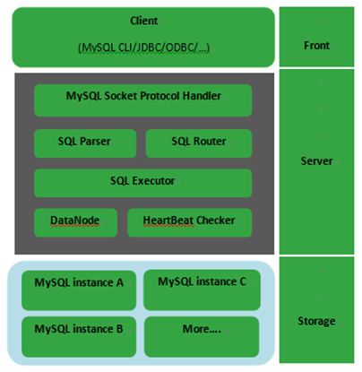
如图所示：MyCAT使用Mysql的通讯协议模拟成了一个Mysql服务器，并建立了完整的Schema（数据库）、Table （数据表）、User(用户)的逻辑模型，并将这套逻辑模型映射到后端的存储节点DataNode（MySQL Instance）上的真实物理库中，这样一来，所有能使用Mysql的客户端以及编程语言都能将MyCAT当成是Mysql Server来使用，不必开发新的客户端协议。
1.4 Mycat解决的问题
性能问题 数据库连接过多 E-R分片难处理 可用性问题 成本和伸缩性问题

1.5 Mycat对多数据库的支持

1.6 分片策略
MyCAT支持水平分片与垂直分片： 水平分片：一个表格的数据分割到多个节点上，按照行分隔。 垂直分片：一个数据库中多个表格A，B，C，A存储到节点1上，B存储到节点2上，C存储到节点3上。
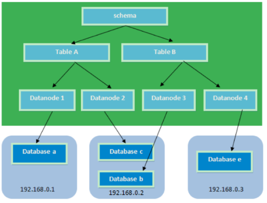
MyCAT通过定义表的分片规则来实现分片，每个表格可以捆绑一个分片规则，每个分片规则指定一个分片字段并绑定一个函数，来实现动态分片算法。
Schema：逻辑库，与MySQL中的Database（数据库）对应，一个逻辑库中定义了所包括的Table。 Table：表，即物理数据库中存储的某一张表，与传统数据库不同，这里的表格需要声明其所存储的逻辑数据节点DataNode。在此可以指定表的分片规则。 DataNode：MyCAT的逻辑数据节点，是存放table的具体物理节点，也称之为分片节点，通过DataSource来关联到后端某个具体数据库上 DataSource：定义某个物理库的访问地址，用于捆绑到Datanode上
第二节 Mycat安装
2.1 Mycat下载
Mycat下载可以到官网下载也可以到github上下载
下载路径：
官方网站： http://www.mycat.org.cn/
github地址 https://github.com/MyCATApache
2.2 Mycat安装
MyCat安装，需要安装jdk
2.2.1 上传并解压
把MyCat的压缩包上传到linux服务器，并且解压
cd /opt/work 切换目录 tar -zxvf Mycat-server-1.4-linux.tar.gz 解压
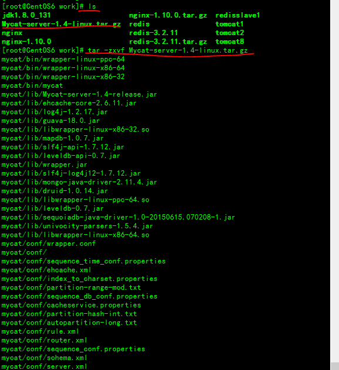
2.2.2 启动
/opt/work/mycat/bin/mycat start 启动 /opt/work/mycat/bin/mycat stop 停止 /opt/work/mycat/bin/mycat restart 重启
2.2.3 连接
可以使用MySQL自带的客户端进行连接，也可以使用可视化软件进行连接
mycat的默认的账号和密码都是test
客户端连接
mysql -h 10.211.55.12 -u test -p -P 8066
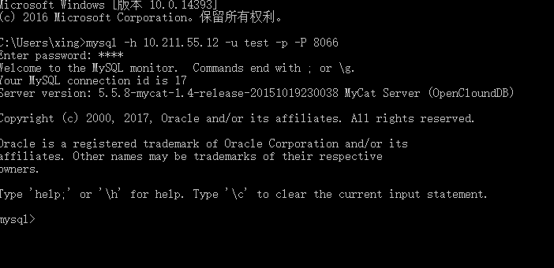
可视化工具连接
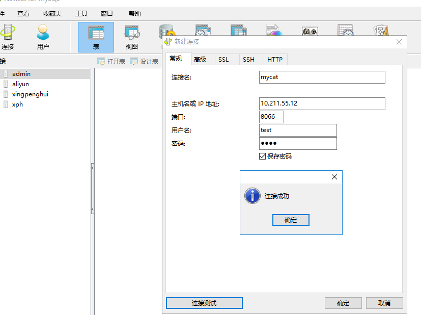
注意：可以使用mysql的客户端直接连接mycat服务。默认服务端口为8066
第三节 Mycat分片配置
将指定的一张表分片进行存储，比如存储到三个数据节点上
3.1 创建三个数据库，准备表
使用一台服务器模拟分片操作，创建三个数据库分别命名
db_mycat_1
db_mycat_2
db_mycat_3
ip地址：10.211.55.12
3.2 MyCat配置文件说明
3.2.1 Server.xml介绍
server.xml几乎保存了所有mycat需要的系统配置信息。最常用的是在此配置用户名、密码及权限。
常用标签
user标签
内容： <user name="test"> 说明用户名是test。 子标签： property，privileges
property标签
| 内容 | 说明 |
|---|---|
test | 用户密码是test |
db1, db2 | 可访问的schema有db1,db2 |
true | 是否只读 |
11111 | 连接上限，降级权值。 |
1 | 是否开启加密。 |
privileges标签
对用户的 schema以及表进行精细化的DML权限控制。
xxxxxxxxxx<privileges check="false">check表示是否开启DML权限检查。默认是关闭。
check表示是否开启DML权限检查。默认是关闭。 server.dtd文件中 `` 说明可以有多个schema的配置。
dml顺序说明：
insert,update,select,delete
xxxxxxxxxx<schema name="db1" dml="0110" > <table name="tb01" dml="0000"></table> <table name="tb02" dml="1111"></table></schema>db1的权限是update,select。 db1的权限是update,select。 tb01的权限是啥都不能干。 db1的权限是update,select。 tb01的权限是啥都不能干。 tb02的权限是insert,update,select,delete。 db1的权限是update,select。 tb01的权限是啥都不能干。 tb02的权限是insert,update,select,delete。 其他表默认是udpate,select。
system标签
xxxxxxxxxx<property name="charset">utf8</property> 字符集<property name="processors">1</property> 处理线程数量，默认是cpu数量。<property name="processorBufferChunk">4096</property> 每次读取留的数量，默认4096。<property name="processorBufferPool">409600</property> 创建共享buffer需要占用的总空间大小，processorBufferChunk*processors*100。<property name="processorBufferPoolType">0</property>默认为0。0表示DirectByteBufferPool，1表示ByteBufferArena。<property name="processorBufferLocalPercent">100</property>二级共享buffer是processorBufferPool的百分比，这里设置的是百分比。<property name="sequnceHandlerType">100</property>全局ID生成方式。(0:为本地文件方式，1:为数据库方式；2:为时间戳序列方式；3:为ZK生成ID；4:为ZK递增ID生成。<property name="useCompression">1</property>是否开启mysql压缩协议。1为开启，0为关闭，默认关闭。<property name="packetHeaderSize">4</property> 指定 Mysql 协议中的报文头长度。默认 4。<property name="maxPacketSize">16M</property>指定 Mysql 协议可以携带的数据最大长度。默认 16M。<property name="idleTimeout">1800000</property>指定连接的空闲超时时间。某连接在发起空闲检查下，发现距离上次使用超过了空闲时间，那么这个连接会被回收，就是被直接的关闭掉。默认 30 分钟，单位毫秒。<property name="txIsolation">3</property>前端连接的初始化事务隔离级别，只在初始化的时候使用，后续会根据客户端传递过来的属性对后端数据库连接进行同步。默认为 REPEATED_READ，设置值为数字默认 3。 READ_UNCOMMITTED = 1; READ_COMMITTED = 2; REPEATED_READ = 3; SERIALIZABLE = 4;<property name="sqlExecuteTimeout">300</property>SQL 执行超时的时间，Mycat 会检查连接上最后一次执行 SQL 的时间，若超过这个时间则会直接关闭这连接。默认时间为 300 秒，单位秒。<property name="processorCheckPeriod">1000</property>清理 NIOProcessor 上前后端空闲、超时和关闭连接的间隔时间。默认是 1 秒，单 位毫秒。<property name="dataNodeIdleCheckPeriod">300000</property> 对后端连接进行空闲、超时检查的时间间隔，默认是 300 秒，单位毫秒。<property name="dataNodeHeartbeatPeriod">10000</property>对后端所有读、写库发起心跳的间隔时间，默认是 10 秒，单位毫秒。<property name="bindIp">0.0.0.0</property>mycat 服务监听的 IP 地址，默认值为 0.0.0.0。<property name="serverPort">8066</property>定义 mycat 的使用端口，默认值为 8066。<property name="managerPort">9066</property>定义 mycat 的管理端口，默认值为 9066。<property name="fakeMySQLVersion">5.6</property>mycat 模拟的 mysql 版本号，默认值为 5.6 版本，如非特需，不要修改这个值，目前支持设置 5.5,5.6,5.7 版本，其他版本可能会有问题。<property name="useSqlStat">0</property> 是否开启实时统计。1为开启；0为关闭 。<property name="useGlobleTableCheck">0</property>是否开启全局表一致性检测。1为开启；0为关闭 <property name="handleDistributedTransactions">0</property>分布式事务开关。0为不过滤分布式事务；1为过滤分布式事务；2 为不过滤分布式事务,但是记录分布式事务日志。<property name="maxStringLiteralLength">65535</property>默认是65535。 64K 用于sql解析时最大文本长度 以上举例的属性仅仅是一部分，可以配置的变量很多，具体可以查看SystemConfig这个类的属性内容。 System标签下的属性，一般是上线后，需要根据实际运行的情况，分析后调优的时候进行修改。Firewall标签
顾名思义，这个就是关于防火墙的设置，也就是在网络层对请求的地址进行限制，主要是从安全角度来保证Mycat不被匿名IP进行访问
xxxxxxxxxx<firewall> <whitehost> <host host="127.0.0.1" user="mycat"/> <host host="127.0.0.2" user="mycat"/> </whitehost> <blacklist check="false"> </blacklist></firewall>3.2.2 Schema.xml介绍
Schema.xml作为MyCat中重要的配置文件之一，管理着MyCat的逻辑库、表、分片规则、DataNode以及DataSource。弄懂这些配置，是正确使用MyCat的前提。这里就一层层对该文件进行解析。
schema 标签用于定义MyCat实例中的逻辑库 Table 标签定义了MyCat中的逻辑表 dataNode 标签定义了MyCat中的数据节点，也就是我们通常说所的数据分片。 dataHost 标签在mycat逻辑库中也是作为最底层的标签存在，直接定义了具体的数据库实例、读写分离配置和心跳语句。 注意：若是LINUX版本的MYSQL，则需要设置为Mysql大小写不敏感，否则可能会发生表找不到的问题。 在MySQL的配置文件中my.cnf 位置在etc目录下[mysqld] 中增加一行 lower_case_table_names = 1
3.2.3 rule.xml
rule.xml里面就定义了我们对表进行拆分所涉及到的规则定义。我们可以灵活的对表使用不同的分片算法，或者对表使用相同的算法但具体的参数不同。 这个文件里面主要有tableRule和function这两个标签。在具体使用过程中可以按照需求添加tableRule和function。
3.3 分片使用
3.3.1 Server.xml配置
vim /opt/work/mycat/conf/server.xml 编辑系统配置信息
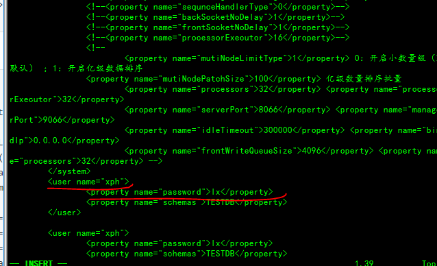
3.3.2 Schema.xml配置
vim /opt/work/mycat/conf/schema.xml 编辑规则配置信息
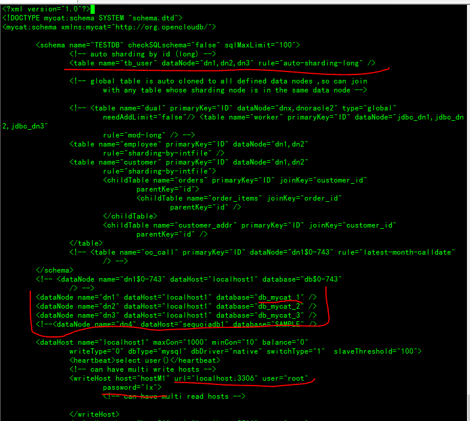
重新启动mycat
x <mycat:schema xmlns:mycat="http://org.opencloudb/"><schema name="TESTDB" checkSQLschema="false" sqlMaxLimit="100"> <!-- auto sharding by id (long) --> <table name="TB_ITEM" dataNode="dn1,dn2,dn3" rule="auto-sharding-long" /> <table name="TB_USER" primaryKey="ID" type="global" dataNode="dn1,dn2" /></schema><dataNode name="dn1" dataHost="localhost1" database="db1" /><dataNode name="dn2" dataHost="localhost2" database="db2" /><dataNode name="dn3" dataHost="localhost1" database="db3" /><dataHost name="localhost1" maxCon="1000" minCon="10" balance="0" writeType="0" dbType="mysql" dbDriver="native" switchType="1" slaveThreshold="100"> <heartbeat>select user()</heartbeat> <!-- can have multi write hosts --> <writeHost host="hostM1" url="10.10.159.131:3306" user="root" password="qishimeiyoumima"> <!-- can have multi read hosts --> </writeHost></dataHost><dataHost name="localhost2" maxCon="1000" minCon="10" balance="0" writeType="0" dbType="mysql" dbDriver="native" switchType="1" slaveThreshold="100"> <heartbeat>select user()</heartbeat> <!-- can have multi write hosts --> <writeHost host="hostM1" url="10.10.159.141:3306" user="root" password="qishimeiyoumima"> <!-- can have multi read hosts --> </writeHost></dataHost></mycat:schema>3.4. 测试分片
3.4.1 创建表
配置完毕后，重新启动mycat。使用mysql客户端连接mycat，创建表。 注意，需要连接到mycat，执行建表语句，表名与schema.xml中的虚拟表名一致 create table tb_user( id int primary key AUTO_INCREMENT COMMENT '用户序号', username varchar(20) NOT NULL COMMENT '账号', password varchar(32) NOT NULL COMMENT '密码', createtime datetime COMMENT '创建时间' )
3.4.2 创建数据
xxxxxxxxxxinsert into TB_USER(id,username,password,createtime) values(1,'zs','123456',now());insert into TB_USER(id,username,password,createtime) values(200000,'zs','123456',now());insert into TB_USER(id,username,password,createtime) values(5000001,'zs','123456',now());insert into TB_USER(id,username,password,createtime) values(10000002,'zs','123456',now());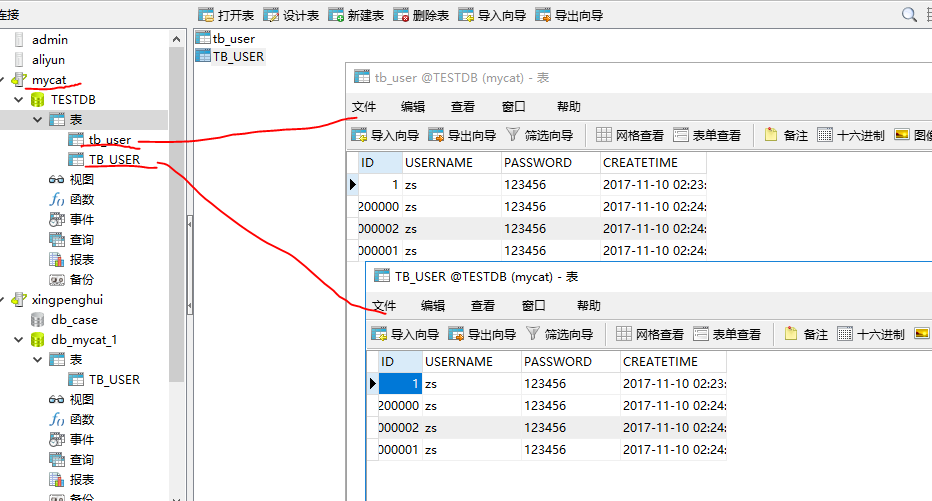
再看下三个分片的数据
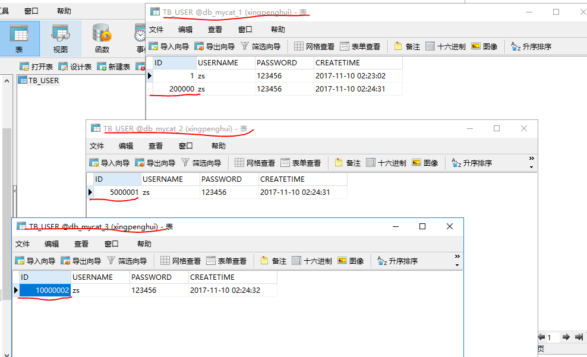
3.4.2 分片测试
由于配置的分片规则为“auto-sharding-long”，所以mycat会根据此规则自动分片。 每个datanode中保存一定数量的数据。根据id进行分片 经测试id范围为： Datanode1：1~5000000 Datanode2：5000000~10000000 Datanode3：10000001~15000000 当15000000以上的id插入时报错： [Err] 1064 - can't find any valid datanode :TB_ITEM -> ID -> 15000001 此时需要添加节点了。
第四节 Mycat读写分离
4.1 简介
MySQL作为世界上使用最为广泛的数据库之一，免费是其原因之一。但不可忽略的是它本身的功能的确很强大。随着技术的发展，在实际的生产环境中，由单台MySQL数据库服务器不能满足实际的需求。此时数据库集群就很好的解决了这个问题了。采用MySQL分布式集群，能够搭建一个高并发、负载均衡的集群服务器（这篇博客暂时不涉及）。在此之前我们必须要保证每台MySQL服务器里的数据同步。数据同步我们可以通过MySQL内部配置就可以轻松完成，主要有主从复制和主主复制。
数据库读写分离对于大型系统或者访问量很高的互联网应用来说，是必不可少的一个重要功能。对于MySQL来说，标准的读写分离是主从模式，一个写节点Master后面跟着多个读节点，读节点的数量取决于系统的压力，通常是1-3个读节点的配置

Mycat读写分离和自动切换机制，需要mysql的主从复制机制配合。
4.2 Mysql的主从复制

主从配置需要注意的地方
1、主DB server和从DB server数据库的版本一致 2、主DB server和从DB server数据库数据一致[ 这里就会可以把主的备份在从上还原，也可以直接将主的数据目录拷贝到从的相应数据目录] 3、主DB server开启二进制日志,主DB server和从DB server的server_id都必须唯一
4.2.1 Mysql主服务器配置
修改my.cnf文件：位置/etc/my.cnf
xxxxxxxxxxvim /etc/my.cnf 编辑mysql的配置文件在[mysqld]段下添加：#启用的数据库inlog-do-db=db1#忽略的数据库binlog-ignore-db=mysql#启用二进制日志log-bin=mysql-bin#服务器唯一ID，一般取IP最后一段server-id=134重启mysql服务
service mysqld restart
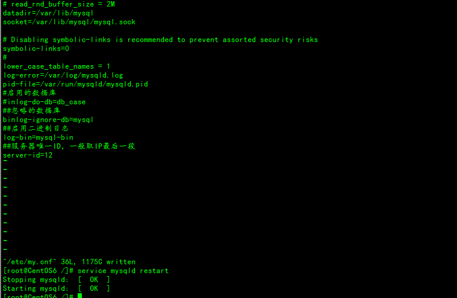
下面的操作都需要连接Mysql的服务器进行设置
建立帐户并授权slave
xxxxxxxxxxGRANT REPLICATION SLAVE ON *.* to 'backup'@'%' identified by 'lx';刷新权限
xxxxxxxxxxFLUSH PRIVILEGES;查看主库状态
xxxxxxxxxxSHOW MASTER STATUS;查看mysql现在有哪些用户
xxxxxxxxxxselect user,host from mysql.user;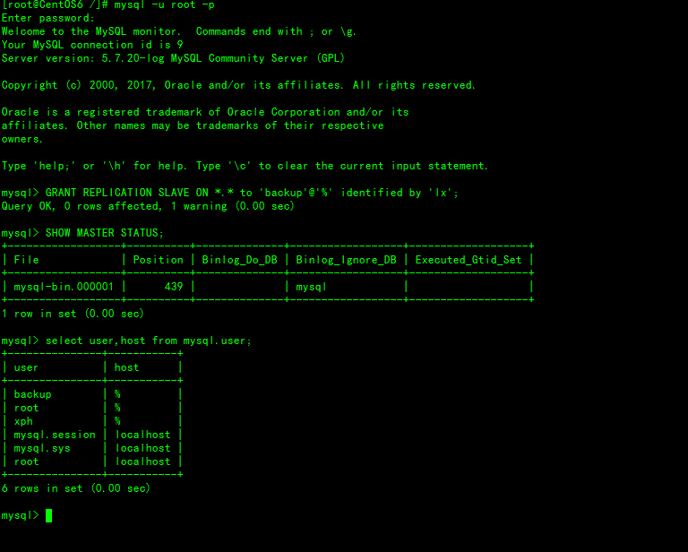
一般不用root帐号，“%”表示所有客户端都可能连，只要帐号，密码正确，此处可用具体客户端IP代替，如10.211.55.12，加强安全。
4.2.2 Mysql从服务器配置
修改my.conf文件
vim /etc/my.cnf 修改配置文件 server-id=131 服务唯一地址
下面的操作都需要连接Mysql的服务器进行设置
配置从服务器
xxxxxxxxxxchange master to master_host='10.211.55.12',master_port=3306,master_user='backup',master_password='lx',master_log_file='mysql-bin.000001',master_log_pos=439注意语句中间不要断开，master_port为mysql服务器端口号(无引号)，master_user为执行同步操作的数据库账户，439无单引号(此处的439就是show master status 中看到的position的值，这里的mysql-bin.000001就是file对应的值)。
启动从服务器复制功能
xxxxxxxxxxstart slave; 检查从服务器复制功能状态
xxxxxxxxxxshow slave status; xxxxxxxxxx……………………(省略部分)Slave_IO_Running: Yes //此状态必须YESSlave_SQL_Running: Yes //此状态必须YES……………………(省略部分)注：Slave_IO及Slave_SQL进程必须正常运行，即YES状态，否则都是错误的状态(如：其中一个NO均属错误)。错误处理：如果出现此错误：Fatal error: The slave I/O thread stops because master and slave have equal MySQL server UUIDs; these UUIDs must be different for replication to work.因为是mysql是克隆的系统所以mysql的uuid是一样的，所以需要修改。解决方法：删除/var/lib/mysql/auto.cnf文件，重新启动服务。以上操作过程，从服务器配置完成。4.2.3 Mycat配置
Mycat 1.4开始 支持MySQL主从复制状态绑定的读写分离机制，让读更加安全可靠
schema.xml的配置
xxxxxxxxxx<dataNode name="dn1" dataHost="localhost1" database="db1" /><dataNode name="dn2" dataHost="localhost1" database="db2" /><dataNode name="dn3" dataHost="localhost1" database="db3" /><dataHost name="localhost1" maxCon="1000" minCon="10" balance="1" writeType="0" dbType="mysql" dbDriver="native" switchType="2" slaveThreshold="100"> <heartbeat>show slave status</heartbeat> <writeHost host="hostM" url="10.10.159.131:3306" user="root" password="qishimeiyoumima"> <readHost host="hostS" url="10.10.159.141:3306" user="root" password="qishimeiyoumima" /> </writeHost></dataHost>配置说明
设置 balance="1"与writeType="0"
Balance参数设置：
1. balance=“0”, 所有读操作都发送到当前可用的writeHost上。
2. balance=“1”，所有读操作都随机的发送到readHost。
3. balance=“2”，所有读操作都随机的在writeHost、readhost上分发
WriteType参数设置：
1. writeType=“0”, 所有写操作都发送到可用的writeHost上。
2. writeType=“1”，所有写操作都随机的发送到readHost。
3. writeType=“2”，所有写操作都随机的在writeHost、readhost分上发。“readHost是从属于writeHost的，即意味着它从那个writeHost获取同步数据，因此，当它所属的writeHost宕机了，则它也不会再参与到读写分离中来，即“不工作了”，这是因为此时，它的数据已经“不可靠”了。
基于这个考虑，目前mycat 1.3和1.4版本中，若想支持MySQL一主一从的标准配置，并且在主节点宕机的情况下，从节点还能读取数据，则需要在Mycat里配置为两个writeHost并设置banlance=1。” (2) 设置 switchType="2" 与slaveThreshold="100" switchType 目前有三种选择： -1：表示不自动切换 1 ：默认值，自动切换 2 ：基于MySQL主从同步的状态决定是否切换
“Mycat心跳检查语句配置为 show slave status ，dataHost 上定义两个新属性： switchType="2" 与slaveThreshold="100"，此时意味着开启MySQL主从复制状态绑定的读写分离与切换机制。 Mycat心跳机制通过检测 show slave status 中的 "Seconds_Behind_Master", "Slave_IO_Running", "Slave_SQL_Running" 三个字段来确定当前主从同步的状态以及Seconds_Behind_Master主从复制时延。